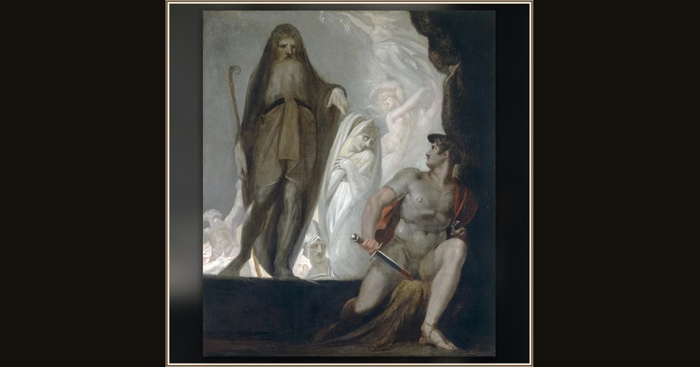

Teiresias Foretells the Future to Odysseus
Henry Fuseli · c. 1800 · Amgueddfa Cymru – Museum Wales · Cardiff, Wales
In Fuseli’s dramatic, dreamlike painting, the prophet Teiresias raises his arm and shows Odysseus the long road that still lies ahead. Explore its place in Book XI of the Odyssey.